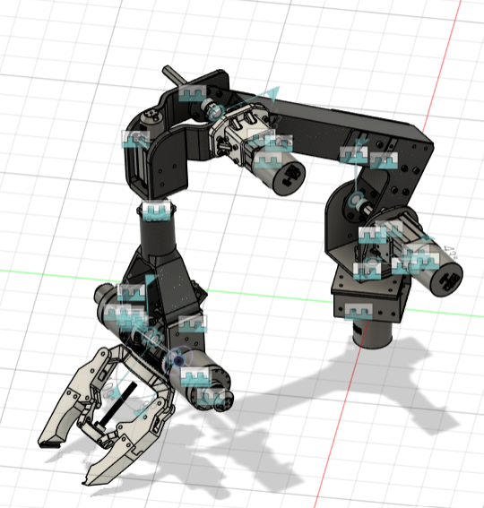

Robotics for Space Exploration
Mechanical design, CAD development, and manufacturing work for a University of Toronto autonomous rover project team.
Project Overview
Robotics for Space Exploration (RSX) was one of my first major engineering project experiences at university and where I first learned CAD and practical mechanical design workflows.
I worked on the rover arm subsystem, contributing to end-effector development, elbow-joint redesign, manufacturing preparation, structural integration, and assembly support.
The project provided early experience with iterative engineering design, rapid prototyping, fabrication constraints, and the transition from CAD models to real mechanical systems.
Technical Skills
Arm & End Effector Design
I contributed to the design of a new robotic arm end effector and associated testing modules using Fusion 360. This work involved balancing structural rigidity, manufacturability, assembly simplicity, and weight considerations.
The project introduced me to practical mechanical design workflows, including iterative CAD development, tolerance considerations, component interfacing, and preparing parts for manufacturing.

Hex Hub Locking Mechanism
One of my earliest CAD projects involved designing a hex hub locking mechanism intended to reduce structural backlash in the arm assembly. The integration of hex-based locking interfaces improved rotational stability while maintaining manufacturability and modularity.
Although simple compared to later projects, this was an important introduction to mechanical constraint design, tolerance awareness, and translating design intent into manufacturable geometry.

Mechanical Redesign & Weight Reduction
I also contributed to redesigning the elbow joint assembly by replacing a belt-driven mechanism with a lighter and more structurally efficient configuration. The redesign reduced subsystem weight by approximately 30% without sacrificing torque capability.
This work demonstrated the importance of iterative redesign and tradeoff analysis in mechanical systems, especially when balancing structural performance, manufacturability, reliability, and mass constraints.
Manufacturing & Assembly
In addition to CAD work, I participated in manufacturing and assembly activities involving machining, 3D printing, subsystem integration, and physical testing. Working directly with fabricated components helped connect CAD design decisions with real-world assembly constraints and mechanical behavior.
This experience was valuable because it showed that good engineering design is not only about creating functional CAD geometry, but also ensuring that systems are practical to manufacture, assemble, maintain, and iterate on.

Key Takeaways
RSX was my introduction to collaborative engineering projects at university and played a major role in developing my interest in aerospace and mechanical systems design.
The project taught me the fundamentals of CAD workflows, iterative engineering design, prototyping, and the importance of connecting digital models with manufacturing reality.
It also developed my ability to work in technical teams, communicate design ideas, and contribute to larger subsystem-level engineering efforts.